CICIoT2023, published by Neto et al., is one of the largest public datasets for intrusion detection in IoT networks: 46,686,579 labelled flows recorded on a testbed of 105 devices under 33 attacks. The paper's Random Forest scores above 99% accuracy, but that number hides a problem. DDoS and DoS make up 90.1% of the data, and there are 2,588 DDoS flows for every brute-force flow, so the rare attacks are mostly missed.
In this project I design a gateway intrusion detection system with the 10-step IoT design methodology and build its detection model in three stages. First, I reproduce the paper's Random Forest on a de-duplicated 3.0% sample (1,401,354 flows drawn from all 169 files). It matches the paper's accuracy (0.995 against 0.994 for 8 classes) and has the same weakness: web attacks are recognised only 16% of the time and brute-force attacks 24%. Second, I try five ways of handling the imbalance on the training data (SMOTE, Borderline-SMOTE, SMOTE with undersampling, class weights and decision-threshold tuning) with four models. For the Random Forest all five give a statistically significant gain (paired bootstrap, p < 0.05). Threshold tuning works best, raising macro-F1 from 0.785 to 0.851 without making the model any bigger, while SMOTE gives the highest rare-class recall (0.398 to 0.626). Third, I use feature selection to make the detector lighter. With 20 of the 46 features the tuned forest keeps its macro-F1 (0.856) while predicting 22% faster from a 28% smaller model, and a class-weighted Decision Tree reaches macro-F1 0.841 in only 1.1 MB.
Two side findings are worth reporting. Unless duplicate rows are removed, 15.9% of the test rows also appear in the training data, and the precision and recall columns in the paper's results table are swapped.
Keywords: IoT security, intrusion detection, CICIoT2023, class imbalance, SMOTE, threshold tuning, feature selection, edge computing
Most IoT devices are small, cheap and rarely updated, and every one that joins a home or factory network gives an attacker another way in. Intrusion detection systems (IDS) that learn from labelled traffic are a common defence, and CICIoT2023 [1] was created to train and test such systems on realistic IoT traffic. The trouble is its class distribution. A detector that always answered “DDoS” would already be 73% accurate, yet it would never catch a brute-force login or a web injection, and those are exactly the attacks that let someone take over a device. Accuracy on its own therefore says very little about the attacks we care about most, so this report looks at the recall of each class instead.
Neto et al. [1] built a smart-home testbed of 105 devices (67 IP devices and 38 Zigbee and Z-Wave devices behind five hubs), launched 33 attacks from compromised IoT devices and released 46,686,579 labelled rows. Each row has 46 features computed over a window of 10 or 100 packets. They trained Logistic Regression, a Perceptron, AdaBoost, a Random Forest and a deep neural network on 2-, 8- and 34-class versions of the problem, using an 80/20 split and standard scaling, and did nothing special about the class imbalance. Their own confusion matrix (Table 8 of [1]) shows the Random Forest recognising only 4.2% of web-based flows and 5.7% of brute-force flows. In their conclusion they list “the analysis of features and how they influence different ML models” as future work, and that is where the extension in this project comes from.
The project is built around three research questions, each with a target that was fixed in Phase 1.
A few things came up that I had not planned for. Unless duplicate rows are removed, 15.9% of the test set also appears in the training data. The precision and recall columns in the paper's Table 6 are swapped. And LightGBM with default settings turns out to be unstable on this data unless the training set is rebalanced.
Section 2 gives some background. Section 3 designs the system with Bahga and Madisetti's 10-step IoT design methodology [6]. Its last step, application development, is the machine-learning pipeline, and Sections 4 and 5 describe how that pipeline was evaluated and what it found. Section 6 discusses the results and Section 7 concludes.
Datasets. What sets CICIoT2023 [1] apart is its size and the fact that the attacks are launched from IoT devices themselves. The course reading list also includes CIC IoT-DIAD 2024 [15], built for device identification and anomaly detection, and the Dalhousie NIMS Lab IoT 2024 dataset [16]. Both would be good places to test whether models trained here carry over to other networks.
IoT intrusion detection. Deep-learning IDS have been proposed for MQTT-based IoT networks [13], and LightGBM has been combined with metaheuristic feature selection for MQTT intrusion detection [14]. On tabular flow features, though, tree ensembles such as the Random Forest [7] are still strong and inexpensive baselines, which is why this project builds on them.
Class imbalance. There are two broad families of fixes. Data-level methods change what the model is trained on: SMOTE [2] creates synthetic minority samples by interpolating between neighbouring ones, Borderline-SMOTE [3] does this only close to the class boundary, and random undersampling throws away some of the majority samples. Algorithm-level methods leave the data alone: class weights make mistakes on rare classes cost more, threshold moving changes the decision rule after training, and the Balanced Random Forest [4] trains each tree on a class-balanced bootstrap sample. I also include LightGBM [5] as a strong, modern gradient-boosting model.
Feature selection. Mutual information between a feature and the label [17], the impurity importance of a Random Forest [7] and recursive feature elimination [18] are standard examples of filter, embedded and wrapper methods respectively.
IoT design methodology. Bahga and Madisetti [6] describe ten steps that take an IoT system from its purpose and requirements to application development, and define six deployment levels. Section 3 works through them for this system.
The system is an intrusion detection system that sits at the gateway of an IoT network. This section designs it step by step with the 10-step methodology of Bahga and Madisetti [6]; Figure 1 gives an overview of how each step applies.
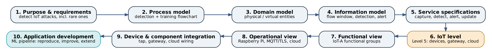
| Aspect | Specification |
|---|---|
| Purpose | Detect and classify malicious traffic in an IoT network at its gateway, including rare attack types, so that an administrator can respond. |
| Behaviour | Watch the traffic of every connected device, summarise it into packet windows, label each window as benign or as one of 7 attack categories (33 attack types), and raise alerts. |
| System management | Monitor the gateway's health and throughput remotely, and update the detection model remotely. |
| Data analysis | Real-time inference at the gateway (edge); training, rebalancing and feature selection in the cloud. |
| Application deployment | Detection on the gateway; storage, dashboard and model registry in the cloud. |
| Security | Encrypted, authenticated channels (TLS) for alerts and updates; an integrity check on every model before it is installed; the IDS only sees a copy of the traffic, so the network keeps running if it fails. |
| Measurable targets | Rare-class recall and macro-F1 above the reproduced baseline (significant at p < 0.05); prediction time in microseconds per flow; a model small enough for a Raspberry Pi-class gateway. |
The process model (Figure 2) is a flowchart of how the system works. It has two loops. The online loop runs on the gateway: it classifies every window of traffic and raises alerts. The offline loop runs in the cloud: it trains and evaluates new models and publishes the good ones. The two loops meet at the model update service and the alert store.
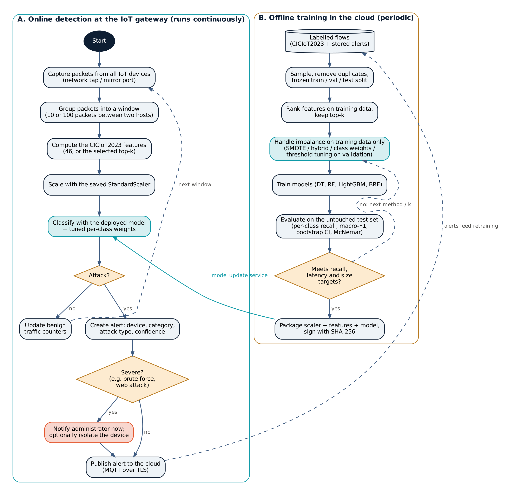
The domain model (Figure 3) lists the entities, objects and relationships without tying them to any technology. The physical entities are the IoT devices, the malicious devices and the traffic between them. Each has a virtual entity standing in for it: a device profile, the flow windows of its traffic, detection results, alerts and the model itself. The devices of the system, namely the gateway with its network tap and a cloud server, observe the physical entities and host the resources. Some resources live on the device (packet capture, feature extractor, classifier, local log) and others on the network (alert store, model registry, training compute). Services make these resources available to the administrator.
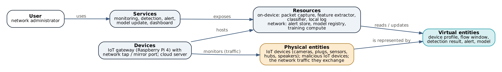
The information model (Figure 4) defines the data structures behind the virtual entities and how they connect. The central one is the FlowWindow, which holds the 46 CICIoT2023 features for one window of 10 or 100 packets between two hosts [1]. A Detection refers to one FlowWindow and to the ModelArtifact that produced it, and an Alert groups the detections for one device.
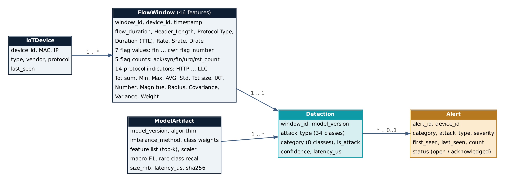
Table 2 lists the services, what each one takes in and produces, how often it runs and where it is hosted.
| Service | Type | Input | Output | Schedule | Hosted on |
|---|---|---|---|---|---|
| Traffic capture | Native (libpcap/tcpdump) | Mirrored packets | Packet stream | Continuous | Gateway |
| Feature extraction | Native (Python) | Packets | FlowWindow (46 features) | Per window | Gateway |
| Detection | Native (scikit-learn / LightGBM) | FlowWindow (top-k, scaled) | Detection | Per window, µs | Gateway |
| Alert | MQTT publish over TLS | Detection with is_attack = true | Alert (JSON) | On event | Gateway → cloud |
| Storage | Database API | Alerts, statistics | Stored records | On event | Cloud |
| Model training | Batch job (Kaggle / cloud VM) | Labelled flows | ModelArtifact + metrics | Periodic | Cloud |
| Model update | REST over HTTPS (pull) | ModelArtifact + SHA-256 | Installed model | Daily poll | Cloud → gateway |
| Dashboard | Web (HTTPS) | Alerts, statistics | Charts, notifications | On demand | Cloud |
The system is a Level 5 deployment (Figure 5). The IoT devices are end nodes that only generate traffic, the gateway is the coordinator that sees all of it, and the cloud handles storage, analysis and the application. There is one intentional difference from the textbook Level 5: detection runs on the coordinator instead of in the cloud, so an attack can be flagged within microseconds and the raw traffic never has to leave the network. Keeping that edge inference cheap is the reason for the feature-selection extension in Section 5.4. Table 3 explains why the other levels were ruled out.
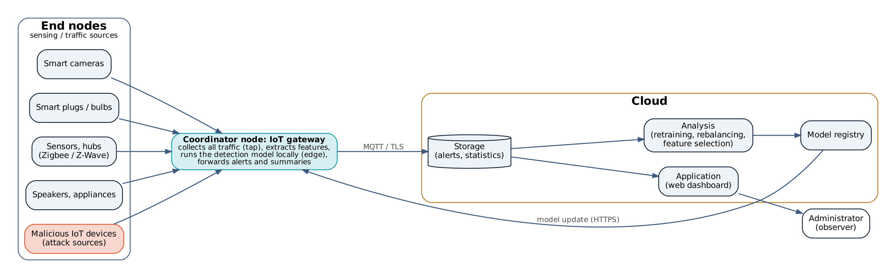
| Level | Definition [6] | Fit for this system |
|---|---|---|
| 1 | Single node; local storage and analysis | No: many devices must be monitored |
| 2 | Single node; cloud storage, local analysis | No: single node |
| 3 | Single node; cloud storage and analysis | No: single node, and sending raw traffic to the cloud costs too much |
| 4 | Multiple nodes, each analysing locally; cloud storage | No: IoT devices are too constrained to run an IDS each |
| 5 | Multiple end nodes and one coordinator; cloud storage and application | Yes: the devices are end nodes and the gateway is the coordinator |
| 6 | Independent end nodes sending to the cloud; central controller | No: devices cannot run agents, and sending all traffic to the cloud adds latency |
The functional view (Figure 6) maps the entities and services onto the IoT-A functional groups: Device, Communication, Services, Management, Security and Application.
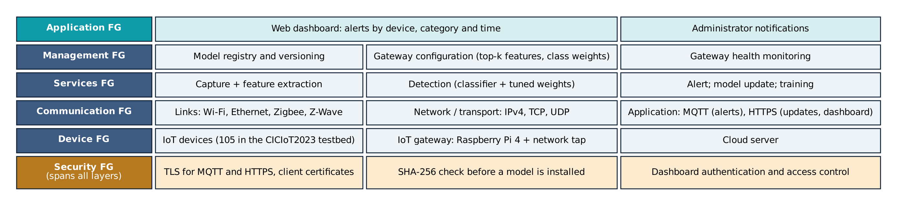
Table 4 records the concrete choices for deploying and running each functional group.
| Functional group | Operational choice |
|---|---|
| Device | Raspberry Pi 4 gateway with a network tap or switch mirror port; cloud VM |
| Communication | MQTT broker (e.g. Mosquitto) with TLS for alerts; HTTPS for model updates and the dashboard |
| Services hosting | Capture, feature extraction and detection run natively on the gateway; storage, dashboard and registry on the cloud VM |
| Storage | Relational or time-series database for alerts; object storage for model artifacts |
| Training | Batch training on a Kaggle CPU (used in this project; 2.7 h for the full experiment matrix) |
| Application hosting | Web dashboard on the cloud VM |
| Management | Versioned model artifacts with metrics and a SHA-256 checksum; a gateway configuration file (top-k feature list, class weights) |
| Security | X.509 client certificates for MQTT; TLS everywhere; checksum verified before a model is installed |
Figure 7 shows how the components connect. The IoT devices join an access point or switch as usual. A network tap, as in the CICIoT2023 testbed [1], or a switch mirror port gives the gateway a passive copy of all traffic, so if the IDS fails the network keeps running. The gateway sends alerts to the cloud and pulls model updates from it.
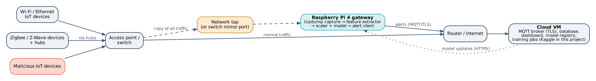
At the heart of the application is the detection model and the pipeline that trains and evaluates it. I wrote it as a tested Python package using scikit-learn [8], imbalanced-learn [9] and LightGBM [5] and ran it end to end on Kaggle; Table 5 lists its modules. Sections 4 and 5 describe the experiments used to choose the model that goes on the gateway.
| Module | Role |
|---|---|
| src/load.py | Streams the 169 CSV files and keeps a random 3% of the rows (class ratios preserved) |
| src/preprocess.py | Removes NaN/inf rows and exact duplicates; makes the frozen, stratified train/val/test split |
| src/resample.py, src/threshold.py | Imbalance methods (training data only); per-class threshold tuning on the validation set |
| src/train.py | Trains and evaluates one configuration; logs metrics, latency, size and predictions |
| src/feature_selection.py | Mutual-information, RF-importance and RFE rankings on the training data |
| src/stats.py, src/analyze.py | Bootstrap confidence intervals, McNemar tests, tables and figures |
| scripts/kaggle_run.py | Runs every phase on Kaggle and packs the results |
| scripts/pi_detect.py | Replays recorded flows through a saved model on a Raspberry Pi gateway |
I streamed all 169 CSV files of the original release and kept each row with probability 0.0300. This gave 1,401,354 rows (3.00% of 46,686,579) with the original class ratios intact. No row had missing or infinite values. I removed 166,898 exact duplicate rows (11.9%) and split the remaining 1,234,456 rows once, stratified on all 34 classes, into training (888,807), validation (98,757) and test (246,892) sets. The test set is never resampled and is never used to make any choice. I call the classes that make up less than 1% of the training data (Recon, Web and BruteForce) the rare classes, and report their mean recall as rare-class recall.
I used four models: a Decision Tree; a Random Forest with 100 trees, as in [1]; LightGBM with 100 boosting rounds, 63 leaves and a learning rate of 0.1; and a Balanced Random Forest with 100 trees, each trained on a class-balanced bootstrap sample. Everything else is left at the library defaults, and the features are standardised as in [1].
All of these are applied to the training data only.
Features are ranked on the training data only, in three ways: mutual information [17] and Random Forest importance (both on a stratified subsample of 200,000 rows), and RFE [18] with a 50-tree forest (on 50,000 rows). Each model is then retrained on the top k ∈ {5, 10, 15, 20, 30} features of the mutual-information ranking, using whichever imbalance method gave it the best macro-F1 on the validation set.
On the test set I report accuracy, macro-averaged precision, recall and F1, balanced accuracy, the Matthews correlation coefficient, the recall of each class and rare-class recall. For cost, I measure prediction latency (batch prediction time per flow on a 4-core Kaggle CPU) and model size (the size of the saved model). Every 8-class configuration is run with three seeds and reported as mean ± standard deviation. To check whether a method really beats the baseline, I compare it with the baseline trained with the same seed on the same test rows, using a paired bootstrap (1,000 resamples, giving a 95% confidence interval and a one-sided p-value) [11] and McNemar's exact test on which rows each model gets right [10].
The whole experiment matrix, 123 training runs, ran unattended on a free Kaggle CPU session and took 2.7 hours.
Table 6 and Figure 8 confirm the imbalance described in [1]. The category shares in my sample match the paper's Table 3 to within sampling error, and the rarest category, BruteForce, is 2,588 times smaller than DDoS. Only 153 Web and 79 BruteForce flows end up in the test set, which is why their recall has the widest confidence intervals. Two features, Telnet and SMTP, are zero in every row of the sample.
| Category | Rows in sample | Share | DDoS : class | Train rows | Test rows |
|---|---|---|---|---|---|
| DDoS | 1,019,793 | 72.772% | 1 : 1 | 622,617 | 172,951 |
| DoS | 243,434 | 17.371% | 4 : 1 | 168,846 | 46,901 |
| Mirai | 78,728 | 5.618% | 13 : 1 | 54,576 | 15,161 |
| Benign | 33,337 | 2.379% | 31 : 1 | 24,003 | 6,667 |
| Spoofing | 14,522 | 1.036% | 70 : 1 | 10,456 | 2,904 |
| Recon | 10,382 | 0.741% | 98 : 1 | 7,476 | 2,076 |
| Web | 764 | 0.055% | 1,335 : 1 | 550 | 153 |
| BruteForce | 394 | 0.028% | 2,588 : 1 | 283 | 79 |
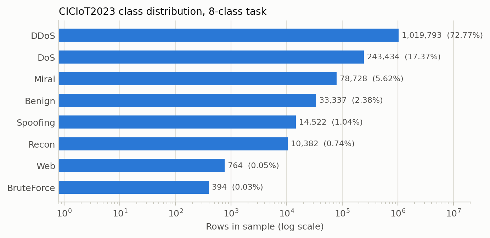
Table 7 puts the reproduced Random Forest next to the paper's. Accuracy agrees to within 0.002 for every task.
Precision and recall need more care. The 34-class Logistic Regression row of the paper's Table 6 (accuracy
0.80231507, “recall” 0.59520185, “precision” 0.486752461, F1 0.49388408) matches, digit for
digit, the output of the public CICIoT2023 example notebook. That notebook calls recall_score(y_pred,
y_test) and precision_score(y_pred, y_test), but scikit-learn expects (y_true,
y_pred), so the two metrics come out the wrong way round. The paper's own Random Forest confusion matrix (its
Table 8) confirms this. Recomputing from it gives a macro recall of 0.706 and a macro precision of
0.917, the reverse of the values printed in Table 6 (0.910 and
0.705), while accuracy (0.994) and F1 (0.720) agree. In
Table 7 I therefore compare the paper's “recall” with my precision, and the other way round.
| Task | Accuracy, paper | Accuracy, ours | Macro-F1, paper | Macro-F1, ours | Paper: printed recall / precision | Ours: precision / recall |
|---|---|---|---|---|---|---|
| 2 classes | 0.997 | 0.997 | 0.965 | 0.970 | 0.965 / 0.965 | 0.968 / 0.972 |
| 8 classes | 0.994 | 0.995 | 0.719 | 0.785 | 0.910 / 0.705 | 0.945 / 0.750 |
| 34 classes | 0.992 | 0.993 | 0.714 | 0.751 | 0.832 / 0.704 | 0.815 / 0.734 |
My macro-F1 is higher than the paper's for 8 and 34 classes. The split is different (random, stratified and
de-duplicated), and library versions and training details probably differ too. One detail stands out: the same
example notebook calls fit() once for each CSV file, and in scikit-learn every call retrains the model
from scratch, so a model trained that way only learns from the last file, about 0.6% of the training data. What
matters more is that the overall pattern is the same (Figure 9). DDoS, DoS and Mirai are recognised almost perfectly,
while Web and BruteForce flows are mostly mistaken for Benign, Recon or Spoofing, just as in the paper's Table 8
(Figure 10).
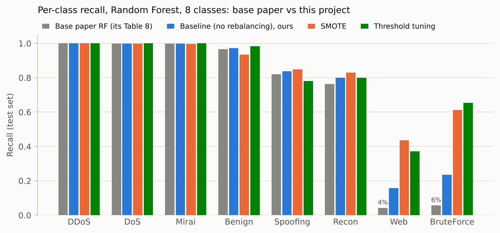
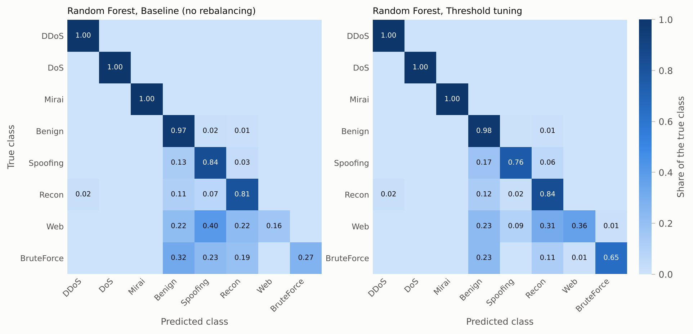
Yes. The reproduced Random Forest matches the paper's accuracy to within 0.002 on all three tasks and has the same weakness: Web and BruteForce flows are recalled only 16% and 24% of the time.
Random Forest, 8 classes. Table 8 compares the six ways of training. Every imbalance method improves both macro-F1 and rare-class recall over the baseline, and Table 9 shows that the gains are real: for every method and every seed, the 95% bootstrap confidence interval for the change in macro-F1 lies above zero.
| Method | Macro-F1 | Balanced acc. | Rare-class recall | Web recall | BruteForce recall | Accuracy | Size (MB) | Train (s) |
|---|---|---|---|---|---|---|---|---|
| Baseline (no rebalancing) | 0.785 ± 0.006 | 0.750 | 0.398 | 0.157 | 0.236 | 0.995 | 169 | 61 |
| SMOTE | 0.837 ± 0.002 | 0.832 | 0.626 | 0.436 | 0.612 | 0.994 | 468 | 103 |
| SMOTE + undersampling | 0.837 ± 0.001 | 0.833 | 0.626 | 0.429 | 0.612 | 0.994 | 449 | 73 |
| Class weights | 0.841 ± 0.007 | 0.795 | 0.523 | 0.314 | 0.477 | 0.994 | 227 | 62 |
| Borderline-SMOTE | 0.811 ± 0.002 | 0.779 | 0.481 | 0.355 | 0.262 | 0.994 | 487 | 112 |
| Threshold tuning | 0.851 ± 0.002 | 0.824 | 0.609 | 0.373 | 0.654 | 0.995 | 169 | 65 |
| Method | Mean Δ macro-F1 | 95% CI (all seeds) | Max bootstrap p | Mean Δ rare-class recall | McNemar p < 0.05 |
|---|---|---|---|---|---|
| SMOTE | +0.052 | [+0.027, +0.077] | < 0.001 | +0.228 | 3 / 3 |
| SMOTE + undersampling | +0.051 | [+0.028, +0.081] | < 0.001 | +0.228 | 3 / 3 |
| Class weights | +0.056 | [+0.025, +0.081] | < 0.001 | +0.125 | 3 / 3 |
| Borderline-SMOTE | +0.026 | [+0.002, +0.053] | 0.013 | +0.084 | 3 / 3 |
| Threshold tuning | +0.066 | [+0.042, +0.090] | < 0.001 | +0.211 | 2 / 3 |
Threshold tuning gives the best Random Forest, with a macro-F1 of 0.851 (+0.066). It needs no extra training data, adds about four seconds of tuning and leaves the model the same size as the baseline (169 MB). It raises BruteForce recall from 0.236 to 0.654 and Web recall from 0.157 to 0.373. SMOTE and the hybrid reach the highest rare-class recall (0.626), but they pay for it in precision: Web precision drops from 0.901 to 0.443, and the forest trained on synthetic data is 2.8 times larger. The SMOTE ablation shows the same trade-off, since topping the rare classes up to only 10,000 rows gives a higher rare-class recall (0.668) than 50,000 or 100,000 rows. Borderline-SMOTE helps least, probably because few rare-class samples lie near a class boundary in this feature space.
One result looks odd at first. For one seed, McNemar's test is not significant for threshold tuning even though the macro-F1 gain is. The reason is that threshold tuning swaps a few errors on the common classes for many correct rare-class detections. The total number of correctly labelled rows hardly changes, but the balance across classes improves a lot.
All models. Table 10 ranks every model and method. The class-weighted Decision Tree (macro-F1 0.841) comes close to the best Random Forest while taking only 1.1 MB and 0.11 µs per flow. Even the plain Decision Tree beats the plain Random Forest on macro-F1, most likely because the forest averages its trees' votes and drowns out the few trees that recognise a rare class. For the Decision Tree, oversampling raises rare-class recall (0.656 → 0.704 with SMOTE) but lowers macro-F1, because a single tree fits the synthetic points too closely and loses precision; class weights improve both a little. Threshold tuning cannot change a fully grown Decision Tree at all, since its leaves are pure and its probabilities are always 0 or 1. The Balanced Random Forest has the highest rare-class recall (0.771) but the lowest precision, so its macro-F1 is only 0.705.
LightGBM with default settings struggles with this imbalance. Without rebalancing its macro-F1 varies a lot from seed to seed (0.503 ± 0.126), which suggests numerical instability when the rare classes contribute only tiny gradients. Rebalancing fixes this (hybrid: 0.833 ± 0.002), so its large gains in Table 10 are as much a repaired baseline as a real improvement.
| Model | Method | Macro-F1 | Rare-class recall | Worst-class recall | Latency (µs/flow) | Size (MB) |
|---|---|---|---|---|---|---|
| Random Forest | Threshold tuning | 0.851 ± 0.002 | 0.609 | 0.373 | 4.02 | 168.8 |
| Random Forest | Class weights | 0.841 ± 0.007 | 0.523 | 0.314 | 4.23 | 227.0 |
| Decision Tree | Class weights | 0.841 ± 0.000 | 0.680 | 0.549 | 0.11 | 1.1 |
| Random Forest | SMOTE | 0.837 ± 0.002 | 0.626 | 0.436 | 4.00 | 468.4 |
| Random Forest | SMOTE + undersampling | 0.837 ± 0.001 | 0.626 | 0.429 | 3.92 | 449.2 |
| LightGBM | SMOTE + undersampling | 0.833 ± 0.002 | 0.700 | 0.549 | 21.66 | 5.6 |
| LightGBM | SMOTE | 0.832 ± 0.002 | 0.690 | 0.551 | 21.25 | 5.6 |
| Decision Tree | Baseline (no rebalancing) | 0.830 ± 0.001 | 0.656 | 0.516 | 0.11 | 0.8 |
| Decision Tree | Threshold tuning | 0.830 ± 0.001 | 0.656 | 0.516 | 0.12 | 0.8 |
| Decision Tree | Borderline-SMOTE | 0.820 ± 0.002 | 0.647 | 0.544 | 0.12 | 2.8 |
| Decision Tree | SMOTE + undersampling | 0.812 ± 0.001 | 0.706 | 0.608 | 0.12 | 2.7 |
| Decision Tree | SMOTE | 0.812 ± 0.003 | 0.704 | 0.599 | 0.12 | 2.7 |
| Random Forest | Borderline-SMOTE | 0.811 ± 0.002 | 0.481 | 0.262 | 4.26 | 486.6 |
| LightGBM | Class weights | 0.802 ± 0.006 | 0.582 | 0.344 | 21.53 | 5.6 |
| Random Forest | Baseline (no rebalancing) | 0.785 ± 0.006 | 0.398 | 0.157 | 3.91 | 168.8 |
| Balanced Random Forest | Baseline (no rebalancing) | 0.705 ± 0.002 | 0.771 | 0.695 | 2.97 | 29.7 |
| LightGBM | Borderline-SMOTE | 0.558 ± 0.137 | 0.526 | 0.313 | 22.44 | 5.6 |
| LightGBM | Baseline (no rebalancing) | 0.503 ± 0.126 | 0.181 | 0.046 | 26.19 | 5.5 |
| LightGBM | Threshold tuning | 0.358 ± 0.141 | 0.088 | 0.021 | 25.11 | 5.5 |
34 classes. With 34 classes the task is harder again (Table 11). The baseline Random Forest never correctly identifies 4 attack types (Backdoor_Malware, Recon-PingSweep, SqlInjection, Uploading_Attack). SMOTE gives the biggest gain, raising macro-F1 from 0.751 to 0.807. These rarest types have only 8 to 33 test rows each, so their individual recall values are noisy.
| Method | Macro-F1 | Δ vs baseline | Rare-class recall | Size (MB) |
|---|---|---|---|---|
| Baseline (no rebalancing) | 0.751 | – | 0.526 | 777 |
| SMOTE | 0.807 | +0.056 (p < 0.001) | 0.650 | 2887 |
| Class weights | 0.788 | +0.037 (p < 0.001) | 0.566 | 1019 |
| Threshold tuning | 0.789 | +0.038 (p < 0.001) | 0.595 | 777 |
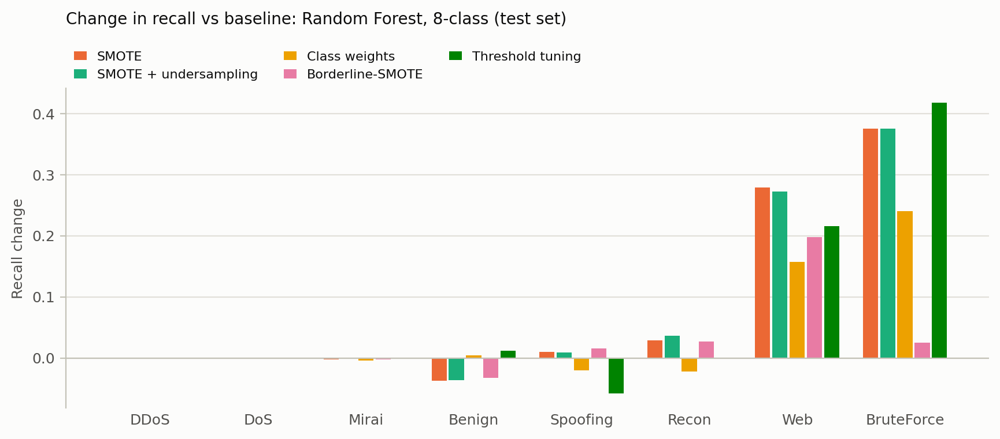
Yes. All five methods improve the Random Forest significantly (p < 0.05 on every seed). Threshold tuning gives the best macro-F1 (0.851, up from 0.785) at no extra size, and SMOTE the highest rare-class recall (0.626, up from 0.398).
The three rankings mostly agree (Table 12): 8 features appear in all three top-10 lists (Header_Length, IAT, Magnitue, Max, Min, Protocol Type, Tot size, Tot sum). Inter-arrival time (IAT) comes first in every ranking, followed by packet-size statistics and flow duration.
| Rank | Mutual information | RF importance | RFE |
|---|---|---|---|
| 1 | IAT | IAT | IAT |
| 2 | Tot size | Min | Min |
| 3 | Max | flow_duration | Magnitue |
| 4 | Magnitue | Protocol Type | flow_duration |
| 5 | AVG | Tot size | Tot size |
| 6 | Tot sum | Magnitue | Max |
| 7 | Min | Max | Tot sum |
| 8 | Header_Length | AVG | rst_count |
| 9 | Protocol Type | Header_Length | Protocol Type |
| 10 | Std | Tot sum | Header_Length |
Table 13 and Figure 12 show how detection quality and cost change as features are removed, using the mutual-information ranking. The threshold-tuned Random Forest loses nothing down to 20 features. Its macro-F1 is 0.856 with 20 features against 0.851 with all 46, a prediction takes 3.12 instead of 4.02 µs per flow (22% faster), and the model shrinks from 169 to 121 MB (28% smaller). Even with 10 features macro-F1 is still 0.841, well above the full-feature baseline (0.785), at 2.58 µs per flow. This meets the Phase 1 target of keeping most of the gain with at most 15 features: with 15 the tuned forest keeps 92% of its macro-F1 gain. Rare-class recall drops faster than macro-F1 as features are removed, though, so for a detector whose main job is catching rare attacks, 20 features is the better choice.
| k | RF macro-F1 | RF rare recall | RF µs/flow | RF MB | DT macro-F1 | DT µs/flow | DT MB |
|---|---|---|---|---|---|---|---|
| 5 | 0.837 | 0.551 | 2.16 | 146 | 0.795 | 0.073 | 1.85 |
| 10 | 0.841 | 0.554 | 2.58 | 134 | 0.795 | 0.081 | 1.63 |
| 15 | 0.846 | 0.572 | 3.11 | 139 | 0.812 | 0.087 | 1.28 |
| 20 | 0.856 | 0.599 | 3.12 | 121 | 0.828 | 0.089 | 1.13 |
| 30 | 0.856 | 0.613 | 3.56 | 134 | 0.828 | 0.104 | 1.11 |
| 46 | 0.851 | 0.609 | 4.02 | 169 | 0.841 | 0.112 | 1.09 |
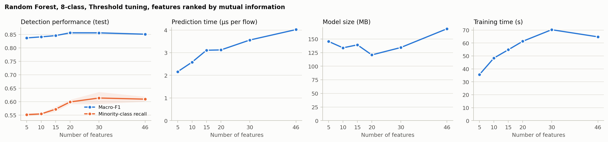
On a Raspberry Pi-class gateway, cost matters as much as accuracy (Figure 13). The class-weighted Decision Tree is the easiest model to deploy: about 1 MB and 0.1 µs per flow with macro-F1 0.841, compared with 169 MB and 4.0 µs for the best forest.
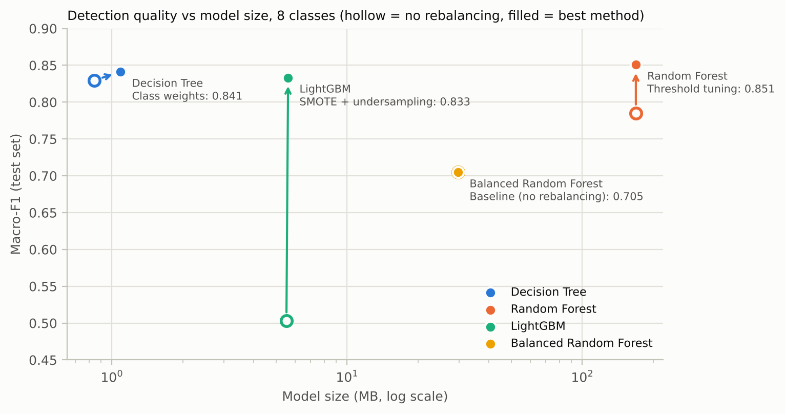
Yes. With 20 of the 46 features the tuned Random Forest keeps its macro-F1 (0.856) while predicting 22% faster from a 28% smaller model.
Without de-duplication, 44,441 test rows (15.9%) have an exact copy in the training data. Table 14 shows what this does to the baseline. Accuracy goes up slightly with the duplicates, because most of the copied rows are easy DDoS and DoS flows, but macro-F1 does not, because the copies do nothing for the rare classes. Removing duplicates is the fairer setting, and it does not make the rare-class problem go away.
| Data | Model | Accuracy | Macro-F1 | Rare-class recall |
|---|---|---|---|---|
| with duplicates | Random Forest | 0.995 | 0.768 | 0.359 |
| with duplicates | Decision Tree | 0.994 | 0.817 | 0.610 |
| duplicates removed | Decision Tree | 0.994 | 0.830 | 0.656 |
| duplicates removed | Random Forest | 0.995 | 0.785 | 0.398 |
Fixing the rare-class problem. The baseline's mistakes follow a pattern: rare attacks get pulled towards the classes around them in feature space, mainly Benign, Recon and Spoofing. Every method that helps does so by moving the decision boundary towards the rare classes. Threshold tuning does it most cheaply, after training, by re-weighting the forest's votes. Because it needs no extra data, time or memory and gives the best macro-F1, it is the method I would recommend by default. SMOTE gets there by adding synthetic rare samples. It recovers more rare attacks, but it also raises more false alarms and makes the forest much larger.
Precision or recall? For an IDS, missing a brute-force login is usually worse than raising a false alarm. Where an analyst checks every alert, the higher rare-class recall of SMOTE or the Balanced Random Forest may be worth it. Where too many alerts would simply be ignored, threshold tuning strikes a better balance.
Deployment. The feature-selection results show that the 46 features overlap a lot, and 20 are enough. Together with the class-weighted Decision Tree, this means a gateway can run a detector of about 1 MB that classifies a window in around 0.1 µs. That leaves most of a Raspberry Pi's resources for packet capture and feature extraction, which would be the real bottlenecks in a live system.
Limitations. (1) I used a 3% sample, so the rarest 34-class types have only a handful of test rows. (2) All results come from one dataset recorded on one testbed, and I have not tested how well they transfer to other networks. (3) CICIoT2023 has no replay attacks, which project topic 4 of the course mentions. (4) Latency was measured as batch prediction on a Kaggle CPU, not on a Raspberry Pi, and it does not include feature extraction. (5) LightGBM was run with default settings; with tuning it might do well without rebalancing. (6) The live parts of Section 3 (capture, MQTT, dashboard) are designed but not deployed.
Using the 10-step IoT design methodology, I designed a Level 5 gateway intrusion detection system and built and evaluated its detection model on CICIoT2023. The reproduction matched the paper's accuracy and showed the same weakness on rare attacks, and it also revealed that the paper reports precision and recall the wrong way round. Handling the imbalance in the training data raised the Random Forest's macro-F1 from 0.785 to 0.851 and its rare-class recall from 0.398 to as much as 0.626, and all of these gains are statistically significant. Feature selection kept that quality with 20 of the 46 features, and a class-weighted Decision Tree gets almost the same macro-F1 in about 1 MB.
Future work. The next step is to run the selected model on a Raspberry Pi with live traffic capture and measure the end-to-end latency; the repository already includes a script that replays recorded flows through a saved model on a Pi (Appendix A). Other directions are testing whether the models transfer to CIC IoT-DIAD 2024 [15] and the Dalhousie IoT 2024 dataset [16], tuning LightGBM for imbalanced data, and trying a two-stage detector that first separates out the common floods and then hands the remaining traffic to a specialist model.
All code, tests, results and this report are at github.com/Dhruvsandilya0711/IoT_Mini_Project.
python scripts/kaggle_run.py. It samples the data, runs every
experiment (baseline, improvement, extension and duplicates) and packs the output into results.zip.python -m pytest runs the whole pipeline on synthetic data in about 20
seconds.python scripts/report_figures.py and
python report/build_report.py rebuild the figures and the report from the results.scripts/pi_detect.py replays recorded flows through a saved model on a
Raspberry Pi and reports alerts, time per flow and memory use; docs/RASPBERRY_PI.md explains the
setup.